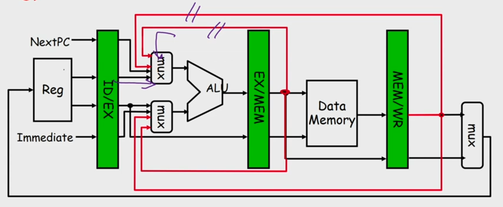
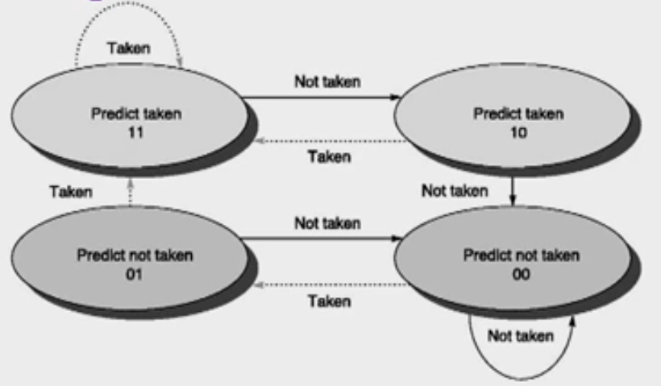
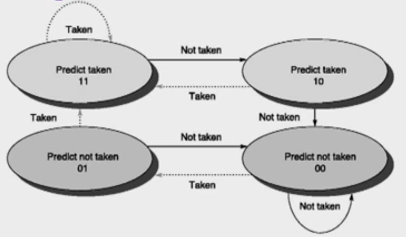
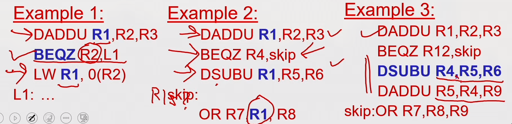

Microprocessors
Introduction to the Microprocessor and Computer
The world’s first microprocessor, the Intel 4004, was a 4-bit microprocessor–programmable controller on a chip. It addressed a mere 4096, 4-bit-wide memory locations. The 4004 instruction set contained only 45 instructions. It was fabricated with the then-current state-of-the-art P-channel MOSFET technology that only allowed it to execute instructions at the slow rate of 50 KIPs (kilo-instructions per second). This was slow when compared to the 100,000 instructions executed per second by the 30-ton ENIAC computer in 1946. The main difference was that the 4004 weighed much less than an ounce. The main problems with this early microprocessor were its speed, word width, and memory size.
The 8085 Microprocessor
In 1977, Intel Corporation introduced an updated version of the 8080—the 8085. The 8085 was to be the last 8-bit, general-purpose microprocessor developed by Intel. Although only slightly more advanced than an 8080 microprocessor, the 8085 executed software at an even higher speed. An addition that took 2.0 μs (500,000 instructions per second on the 8080) required only 1.3 μs (769,230 instructions per second) on the 8085. The main advantages of the 8085 were its internal clock generator, internal system controller, and higher clock frequency. This higher level of component integration reduced the 8085’s cost and increased its usefulness.
The 16-bit microprocessor evolved mainly because of the need for larger memory systems. The popularity of the Intel family was ensured in 1981, when IBM Corporation decided to use the 8088 microprocessor in its personal computer. The 16-bit 8086 and 8088 provided 1M byte of memory.
The 80286 Microprocessor
The 80286 microprocessor (also a 16-bit architecture microprocessor) was almost identical to the 8086 and 8088, except it addressed a 16M-byte memory system instead of a 1M-byte system. The instruction set of the 80286 was almost identical to the 8086 and 8088, except for a few additional instructions that managed the extra 15M bytes of memory. The clock speed of the 80286 was increased, so it executed some instructions in as little as 250 ns (4.0 MIPs) with the original release 8.0 MHz version. Some changes also occurred to the internal execution of the instructions, which led to an eightfold increase in speed for many instructions when compared to 8086/8088 instructions.
The 32-Bit Microprocessor
Applications began to demand faster microprocessor speeds, more memory, and wider data paths. This led to the arrival of the 80386 in 1986 by Intel Corporation. The 80386 represented a major overhaul of the 16-bit 8086–80286 architecture. The 80386 was Intel’s first practical 32-bit microprocessor that contained a 32-bit data bus and a 32-bit memory address.
The 80386 was available in a few modified versions such as the 80386SX, which addressed 16M bytes of memory through a 16-bit data and 24-bit address bus, and the 80386SL/80386SLC, which addressed 32M bytes of memory through a 16-bit data and 25-bit address bus. An 80386SLC version contained an internal cache memory that allowed it to process data at even higher rates. In 1995, Intel released the 80386EX microprocessor. The 80386EX microprocessor is called an embedded PC because it contains all the components of the AT class personal computer on a single integrated circuit. The 80386EX also contains 24 lines for input/output data, a 26-bit address bus, a 16-bit data bus, a DRAM refresh controller, and programmable chip selection logic.
The 80486 Microprocessor.
In 1989, Intel released the 80486 microprocessor, which incorpo- rated an 80386-like microprocessor, an 80387-like numeric coprocessor, and an 8K-byte cache memory system into one integrated package. Although the 80486 microprocessor was not radi- cally different from the 80386, it did include one substantial change. The internal structure of the 80486 was modified from the 80386 so that about half of its instructions executed in one clock instead of two clocks. Because the 80486 was available in a 50 MHz version, about half of the instructions executed in 25 ns (50 MIPs). The average speed improvement for a typical mix of instructions was about 50% over the 80386 that operated at the same clock speed. Later versions of the 80486 executed instructions at even higher speeds with a 66 MHz double-clocked version (80486DX2). The double-clocked 66 MHz version executed instructions at the rate of 66 MHz, with memory transfers executing at the rate of 33 MHz. (This is why it was called a double-clocked microprocessor.) A triple-clocked version from Intel, the 80486DX4, improved the internal execution speed to 100 MHz with memory transfers at 33 MHz. Note that the 80486DX4 microprocessor executed instructions at about the same speed as the 60 MHz Pentium. It also contained an expanded 16K-byte cache in place of the standard 8K-byte cache found on earlier 80486 microprocessors. Advanced Micro Devices (AMD) has produced a triple-clocked version that runs with a bus speed of 40 MHz and a clock speed of 120 MHz. The future promises to bring microprocessors that internally execute instructions at rates of up to 10 GHz or higher.
Pentium II and Pentium Xeon Microprocessors
The Pentium II microprocessor (released in 1997) represents a new direction for Intel. Instead of being an integrated circuit as with prior ver- sions of the microprocessor, Intel has placed the Pentium II on a small circuit board. The main reason for the change is that the L2 cache found on the main circuit board of the Pentium was not fast enough to function properly with the Pentium II. On the Pentium system, the L2 cache oper- ates at the system bus speed of 60 MHz or 66 MHz. The L2 cache and microprocessor are on a circuit board called the Pentium II module. This onboard L2 cache operates at a speed of 133 MHz and stores 512K bytes of information. The microprocessor on the Pentium II module is actually Pentium Pro with MMX extensions.
Microprocessors
Introduction
The addressing modes for this powerful family of microprocessors are described for the real, protected, and flat modes of operation. Real mode memory (DOS memory) exists at locations 00000H–FFFFFH, the first 1M byte of the memory system, and is present on all versions of the microprocessor. Protected mode memory (Windows memory) exists at any location in the entire protected memory system, but is available only to the 80286–Core2, not to the earlier 8086 or 8088 microprocessors. Protected mode memory for the 80286 contains 16M bytes; for the 80386–Pentium, 4G bytes; and for the Pentium Pro through the Core2, either 4G or 64G bytes. With the 64-bit extensions enabled, the Pentium 4 and Core2 address 1T byte of memory in a flat memory model. Windows Vista or Windows 64 is needed to operate the Pentium 4 or Core2 in 64-bit mode using the flat mode memory to access the entire 1T byte of memory.
8086

- 8086 does not have a RAM or ROM inside it. However, it has internal registers for storing intermediate and final results and interfaces with memory located outside it through the System Bus.
- It is a 16-bit Integer processor in a 40 pin, Dual Inline Packaged IC.
- The size of the internal registers(present within the chip) indicate how much information the processor can operate on at a time (in this case 16-bit registers) and how it moves data around internally within the chip, sometimes also referred to as the internal data bus.
- 8086 provides the programmer with 14 internal registers, each 16 bits or 2 Bytes wide.
Memory segmentation:
- To increase execution speed and fetching speed, 8086 segments the memory.
- It’s 20 bit address bus can address 1MB of memory, it segments it into 16 64kB segments.
- 8086 works only with four 64KB segments within the whole 1MB memory.
The internal architecture is divided into 2 units
- The Bus Interface Unit (BIU)
- The Execution Unit (EU)
1. The Bus Interface Unit (BIU)
- It provides the interface of 8086 to external memory and I/O devices via the System Bus. It performs various machine cycles such as memory read, I/O read etc. to transfer data between memory and I/O devices.
Role of BIU
- It generates the 20 bit physical address for memory access.
- It fetches instructions from the memory.
- It transfers data to and from the memory and I/O.
- Maintains the 6 byte prefetch instruction queue(supports pipelining).
- BIU mainly contains the 4 Segment registers, the Instruction Pointer, a prefetch queue and an Address Generation Circuit
Instruction Pointer (IP):
- It is a 16 bit register. It holds offset of the next instructions in the Code Segment
- IP is incremented after every instruction byte is fetched.
- IP gets a new value whenever a branch instruction occurs.
- CS is multiplied by 10H to give the 20 bit physical address of the Code Segment.
- Address of the next instruction is calculated as CS x 10H + IP.
Example:
CS = 4321H
IP = 1000H
then CS x 10H = 43210H + offset = 44210H
Code Segment register
- CS holds the base address for the Code Segment.
- All programs are stored in the Code Segment and accessed via the IP(instruction pointer register).
- CS register cannot be modified by executing any instruction except branch instructions
Data Segment register
DS holds the base address for the Data Segment.
Stack Segment register
SS holds the base address for the Stack Segment.
Extra Segment register
ES holds the base address for the Extra Segment.
Address Generation Circuit:
- The BIU has a Physical Address Generation Circuit.
- It generates the 20 bit physical address using Segment and Offset addresses using the formula:
Physical Address = Segment Address x 10H + Offset Address
6 Byte Pre-fetch Queue
- It is a 6-byte FIFO RAM used to implement Pipelining.
- Fetching the next instruction (by BIU from CS) while executing the current instruction is called pipelining.
- BIU fetches the next "six instruction-bytes" from the Code Segment and stores it into the queue. Execution Unit (EU) removes instructions from the queue and executes them.
- The queue is refilled when atleast two bytes are empty as 8086 has a 16-bit data bus.
- Pipelining fails when a branch occurs, as the pre-fetched instructions are no longer useful. Hence as soon as 8086 detects a branch operation, it clears/discards the entire queue. Now, the next six bytes from the new location (branch address) are fetched and stored in the queue and Pipelining continues.
2. The Execution Unit (EU)
The main components of the EU are General purpose registers, the ALU, Special purpose registers, Instruction Register and Instruction Decoder and the Flag/Status Register.
- Fetches instructions from the Queue in BIU, decodes and executes arithmetic and logic operations using the ALU.
- Sends control signals for internal data transfer operations within the microprocessor.
- Sends request signals to the BIU to access the external module.
- It operates with respect to clock cycles (T-states) and not machine cycles.
- 8086 has four 16 bit general purpose registers AX, BX, CX and DX. Store intermediate values during execution. Each of these have two 8 bit parts (higher and lower).
AX register
It holds operands and results during multiplication and division operations. Also an accumulator during String operations.
BX register
It holds the memory address (offset address) in indirect addressing modes.
CX register
It holds count for instructions like loop, rotate, shift and string operations.
DX register
It is used with AX to hold 32 bit values during multiplication and division.
Arithmetic Logic Unit (16 bit)
Performs 8 and 16 bit arithmetic and logic operations.
Special purpose registers (16-bit)
- Stack Pointer(SP)
- Points to Stack top.
- Stack is in Stack Segment, used during instructions like PUSH, POP, CALL, RET etc.
- Base Pointer(BP)
- BP can hold offset address of any location in the stack segment.
- It is used to access random locations of the stack.
- Source Index(SI)
- It holds offset address in Data Segment during string operations.
- Destination Index(DI)
- It holds offset address in Extra Segment during string operations.
Instruction Register and Instruction Decoder
The EU fetches an opcode from the queue into the instruction register. The instruction decoder decodes it and sends the information to the control circuit for execution.
Flag/Status register (16 bits):
It has 9 flags that help change or recognize the state of the microprocessor.

6 Status flags:
-
carry flag(CF) It is set whenever there is a carry {or borrow} out of the MSB of a the result (D7 bit for an 8-bit operation D15 bit for a 16-bit operation)
-
parity flag(PF) It is set if the result has even parity.
-
auxiliary carry flag(AF) It is set if a carry is generated out of the Lower Nibble. It is used only in 8-bit operations like DAA and DAS.
-
zero flag(Z) It is set if the result is zero.
-
sign flag(S) It is set if the MSB of the result is 1. For signed operations, such a number is treated as –ve.
-
overflow flag (O) It will be set if the result of a signed operation is too large to fit in the number of bits available to represent it. It can be checked using the instruction INTO (Interrupt on Overflow).
Status flags are updated after every arithmetic and logic operation.
3 Control flags:
-
trap flag(TF) It is used to set the Trace Mode i.e. start Single Stepping Mode. Here the µP is interrupted after every instruction so that, the program can be debugged.
-
interrupt flag(IF) It is used to mask (disable) or unmask (enable) the INTR interrupt.
-
direction flag(DF) If this flag is set, SI and DI are in auto-decrementing mode in String Operations.
These flags can be set or reset using control instructions like CLC, STC, CLD, STD, CLI, STI, etc
The Control flags are used to control certain operations.
References
- https://lambdageeks.com/8086-microprocessors-pin-diagram/
- https://www.geeksforgeeks.org/architecture-of-8086/
General purpose registers in 8086 microprocessor
General purpose registers are used to store temporary data within the microprocessor. There are 8 general purpose registers in 8086 microprocessor.

AX, BX, CX, DX are of 16 bits and is divided into two 8-bit registers XH and XL to also perform 8-bit instructions. SP, BP, SI, DI are of 16 bits and cannot be devided.
- AX
- This is the accumulator.
- It is generally used for arithmetical and logical instructions but in 8086 microprocessor it is not mandatory to have accumulator as the destination operand. Example:
ADD AX, AX //(AX = AX + AX)
- BX
- This is the base register.
- It is used to store the value of the offset. Example:
MOV BL, [500] (BL = 500H)
- CX
- This is the counter register.
- It is used in looping and rotation. Example:
MOV CX, 0005
LOOP
- DX
- This is the data register.
- It is used in multiplication an input/output port addressing. Example:
MUL BX (DX, AX = AX * BX)
- SP (stack pointer)
- It points to the topmost item of the stack.
- If the stack is empty the stack pointer will be (FFFE)H.
- Stack is in Stack Segment, used during instructions like PUSH, POP, CALL, RET etc.
- It’s offset address relative to stack segment.
- BP (base pointer)
- It is primary used in accessing parameters passed by the stack.
- It’s offset address relative to stack segment.
- SI (source index register)
- It is used in the pointer addressing of data and as a source in some string related operations.
- It’s offset is relative to data segment.
- DI (destination index register)
- It is used in the pointer addressing of data and as a destination in some string related operations.
- It’s offset is relative to extra segment.
1. Sign Flag (S)
- After any operation if the MSB (B(7)) of the result is 1, it indicates the number is negative and the sign flag becomes set, i.e. 1. If the MSB is 0, it indicates the number is positive and the sign flag becomes reset i.e. 0.
- from 00H to 7F, sign flag is 0
- from 80H to FF, sign flag is 1
- 1- MSB is 1 (negative)
- 0- MSB is 0 (positive)
Example:
MVI A 30 (load 30H in register A) MVI B 40 (load 40H in register B) SUB B (A = A – B) These set of instructions will set the sign flag to 1 as 30 – 40 is a negative number.
MVI A 40 (load 40H in register A) MVI B 30 (load 30H in register B) SUB B (A = A – B) These set of instructions will reset the sign flag to 0 as 40 – 30 is a positive number.
Zero Flag (Z) – After any arithmetical or logical operation if the result is 0 (00)H, the zero flag becomes set i.e. 1, otherwise it becomes reset i.e. 0. 00H zero flag is 1. from 01H to FFH zero flag is 0 1- zero result 0- non-zero result
Example:
MVI A 10 (load 10H in register A) SUB A (A = A – A) These set of instructions will set the zero flag to 1 as 10H – 10H is 00H
Auxiliary Carry Flag (AC) – This flag is used in BCD number system(0-9). If after any arithmetic or logical operation D(3) generates any carry and passes on to B(4) this flag becomes set i.e. 1, otherwise it becomes reset i.e. 0. This is the only flag register which is not accessible by the programmer 1-carry out from bit 3 on addition or borrow into bit 3 on subtraction 0-otherwise
Example:
MOV A 2B (load 2BH in register A) MOV B 39 (load 39H in register B) ADD B (A = A + B) These set of instructions will set the auxiliary carry flag to 1, as on adding 2B and 39, addition of lower order nibbles B and 9 will generate a carry.
Parity Flag (P) – If after any arithmetic or logical operation the result has even parity, an even number of 1 bits, the parity register becomes set i.e. 1, otherwise it becomes reset i.e. 0. 1-accumulator has even number of 1 bits 0-accumulator has odd parity
Example:
MVI A 05 (load 05H in register A) This instruction will set the parity flag to 1 as the BCD code of 05H is 00000101, which contains even number of ones i.e. 2.
Carry Flag (CY) – Carry is generated when performing n bit operations and the result is more than n bits, then this flag becomes set i.e. 1, otherwise it becomes reset i.e. 0. During subtraction (A-B), if A>B it becomes reset and if (A<B) it becomes set. Carry flag is also called borrow flag. 1-carry out from MSB bit on addition or borrow into MSB bit on subtraction 0-no carry out or borrow into MSB bit
Example:
MVI A 30 (load 30H in register A) MVI B 40 (load 40H in register B) SUB B (A = A – B) These set of instructions will set the carry flag to 1 as 30 – 40 generates a carry/borrow.
MVI A 40 (load 40H in register A) MVI B 30 (load 30H in register B) SUB B (A = A – B) These set of instructions will reset the sign flag to 0 as 40 – 30 does not generate any carry/borrow.
Overflow Flag (O) – This flag will be set (1) if the result of a signed operation is too large to fit in the number of bits available to represent it, otherwise reset (0). After any operation, if D[6] generates any carry and passes to D[7] OR if D[6] does not generates carry but D[7] generates, overflow flag becomes set, i.e., 1. If D[6] and D[7] both generate carry or both do not generate any carry, then overflow flag becomes reset, i.e., 0. Example: On adding bytes 100 + 50 (result is not in range -128…127), so overflow flag will set.
MOV AL, 50 (50 is 01010000 which is positive) MOV BL, 32 (32 is 00110010 which is positive) ADD AL, BL (82 is 10000010 which is negative) Overflow flag became set as we added 2 +ve numbers and we got a -ve number.
(b) Control Flags – The control flags enable or disable certain operations of the microprocessor. There are 3 control flags in 8086 microprocessor and these are:
Directional Flag (D) – This flag is specifically used in string instructions. If directional flag is set (1), then access the string data from higher memory location towards lower memory location. If directional flag is reset (0), then access the string data from lower memory location towards higher memory location. Interrupt Flag (I) – This flag is for interrupts. If interrupt flag is set (1), the microprocessor will recognize interrupt requests from the peripherals. If interrupt flag is reset (0), the microprocessor will not recognize any interrupt requests and will ignore them. Trap Flag (T) – This flag is used for on-chip debugging. Setting trap flag puts the microprocessor into single step mode for debugging. In single stepping, the microprocessor executes a instruction and enters into single step ISR. If trap flag is set (1), the CPU automatically generates an internal interrupt after each instruction, allowing a program to be inspected as it executes instruction by instruction. If trap flag is reset (0), no function is performed.
Memory Segmentation in 8086

Concept of Segmentation
-
Segmentation means dividing the memory into logically different parts called segments.
-
8086 has a 20-bit address bus, hence it can access 2^20 Bytes i.e. 1MB memory.
-
But this also means that Physical address will now be 20 bit. It is not possible to work with a 20 bit address as it is not a byte compatible number. (20 bits is two and a half bytes). To avoid working with this incompatible number, we create a virtual model of the memory.
-
Here the memory is divided into 4 segments: Code, Stack Data and Extra.
-
The max size of a segment is 64KB and the minimum size is 16 bytes.
-
Now programmer can access each location with a VIRTUAL ADDRESS.
-
The Virtual Address is a combination of Segment Address and Offset Address.
-
Segment Address indicates where the segment is located in the memory (base address)
-
Offset Address gives the offset of the target location within the segment.
-
Since both, Segment Address and Offset Address are 16 bits each, they both are compatible numbers and can be easily used by the programmer.
-
Moreover, Segment Address is given only in the beginning of the program, to initialize the segment. Thereafter, we only give offset address.
-
Hence we can access 1 MB memory using only a 16 bit offset address for most part of the program. This is the advantage of segmentation.
-
Moreover, dividing Code, stack and Data into different segments, makes the memory more organized and prevents accidental overwrites between them.
-
The Maximum Size of a segment is 64KB because offset addresses are of 16 bits. 216 = 64KB.
-
As max size of a segment is 64KB, programmer can create multiple Code/Stack/Data segments till the entire 1 MB is utilized, but only one of each type will be currently active.
-
The physical address is calculated by the microprocessor, using the formula:
PHYSICAL ADDRESS = SEGMENT ADDRESS X 10H + OFFSET ADDRESS Ex: if Segment Address = 1234H and Offset Address is 0005H then Physical Address = 1234H x 10H + 0005H = 12345H -
This formula automatically ensures that the minimum size of a segment is 10H bytes (10H = 16 Bytes).
Code Segment
- This segment is used to hold the program to be executed.
- Instruction are fetched from the Code Segment.
- CS register holds the 16-bit base address for this segment.
- IP register (Instruction Pointer) holds the 16-bit offset address.
Data Segment
- This segment is used to hold general data.
- This segment also holds the source operands during string operations.
- DS register holds the 16-bit base address for this segment.
- BX register is used to hold the 16-bit offset for this segment.
- SI register (Source Index) holds the 16-bit offset address during String Operations.
Stack Segment
- This segment holds the Stack memory, which operates in LIFO manner.
- SS holds its Base address.
- SP (Stack Pointer) holds the 16-bit offset address of the Top of the Stack.
- BP (Base Pointer) holds the 16-bit offset address during Random Access.
Extra Segment
- This segment is used to hold general data.
- Additionally, this segment is used as the destination during String Operations.
- ES holds the Base Address.
- DI holds the offset address during string operations.
Learning Objective
- Learn and appreciate computer architecture with an emphasis on system design, performance and analysis.
- Elevate thinking process to the level of performance improvement techniques for recent multi-core architectures.
- Understand and analyze events happening at hardware level with the help of open source simulators.
- Enable exploration of future directions in computer architecture research.
Focus
- Part A: Processor design trends - instruction pipeline concepts, pipeline hazards, out-of-order execution, static and dynamic scheduling, advanced branch prediction techniques, multiple issue superscalar processors, vector and GPU architectures.
- Part B: Cache memory concepts and optimization techniques, DRAM organization, memory controllers. Many-core processors; principles, design concepts and microarchitecture of NoC.
- Part C: Exploration in system design and analysis with the help of open source architecture simulator GEM5
Abstraction of Modern Computer Architecture
- Application
- Algorithm
- Programming Language
- Operating System/Virtual Machines
- Instruction Set Architecture
- Microarchitectwre
- Register-Transfer Level
- Gates
- Circuits
- Devices
- Physics
-
ISA vs Microarchitecture
-
ISA Characteristics
- Machine Models
- Encoding
- Data Types
- Instructions
- Addressing Modes
For each operation that is to be carried out with respect to an instruction, we have multiple sub operations like instruction fetch, decode, operand fetch, result store and next instruction.
Instruction Execution Cycle
- Instruction Fetch - Obtain instruction from program storage
- Instruction Decode - Determine required actions and instruction size
- Operand Fetch - Locate and obtain operand data
- Execute - Compute result value or status
- Result Store - Deposit results in storage for later use
- Next Instruction - Determine successor instruction
Processor Memory Interaction
If the processor wants to fetch an instruction, the first thing that you have to do is the address of the instruction which is available in the program counter has to be transferred to a MAR. Similarly, if processor wanted to read or write any data into memory, then also the address has to be kept inside MAR. So MAR is a register which is known as memory address register, which contains the address of the next word that has to be accessed in the memory.
It can be either for a read or a fetch operation or it can be for a right operation. Now whatever is the address that is placed in MAR, the data contents are being exchanged through MDR. So, if it is a write operation, then the contents in MDR are transferred to memory on a location specified by MAR. If it is for an instruction fetch or a read operation, then the contents of the designated location specified by MAR are being transferred to the processor and it reaches MDR first.
Instruction FETCH
- address of the next instruction is transferred from PC to MAR
- the instruction is located in memory
- instruction is copied from memory to MDR
- instruction is transferred to and decoded in the IR
- control unit sends signals to appropriate devices to cause execution of the instruction
Memory Address Decoder

Byte Ordering
- Little Endian
- Big Endian

Byte Alignment
Data alignment
Data alignment means putting the data in memory at address equal to some multiple of the word size. This increases the performance of system due to the way the CPU handles memory.
Data Structure Padding Now, to align the data, it may be necessary to
insert some extra bytes between the end of the last data structure and the start of the next data structure as the data is placed in memory as multiples of fixed word size. This insertion of extra bytes of memory to align the data is called data structure padding.
Types of operations
Arithmetic and Logical Operations
- integer arithmetic
- comparing two quantities
- shifting, rotating bits in a quantity
- testing, comparing, and converting bits
Data Movement Operations
- moving data from memory to the CPU
- moving data from memory to memory
- input and output
Program Control Operations
- starting a program
- halting a program
- skipping to other instructions
- testing data to decide whether to skip over some instructions
Instruction Set Architecture Multiple instructions combined together to form
program and multiple programs combined together to form software which will basically is a big task.
Opcode specifies what needs to be done operand specifies where it needs to be done. And the set of all possible instruction that a processor can do it is known as instruction set architecture.
Classification of ISA
Stack
- Accumulator
- Register-memory
- Register-register / load-store
Addressing Modes
- Register add r1, r2 r1 <- rl+r2
- Immediate add r1, #5 r1 <- r1+5
- Direct add r1, (0x200) r1 <- r1+M[0x200]
- Register indirect add r1, (r2) r1 <- r1+M[r2]
- Displacement add r1, 100(r2) r1 <- r1+M[r2+100]
- Indexed add r1, (r2+r3) r1 <- r1+M[r2+r3])
- Scaled add r1, (r2+r34) r1 <- r1+M[(r2+r34]
- Memory indirect add r1, @(r2) r1 <- r1+M[M[r2]]
- Auto-increment add r1, (r2)+ r1 <- r1+M[r2], r2++
- Auto-decrement add r1, -(r2) r2--, r1 <- r1+M[r2]
Architecture vs. Microarchitecture
“Architecture”/Instruction Set Architecture:
- Programmer visible state (Memory & Register)
- Operations (Instructions and how they work)
- Execution Semantics (interrupts)
- Input/Output
- Data Types/Sizes
Microarchitecture/Organization:
- Tradeoffs on how to implement ISA for some metric (Speed, Energy, Cost)
- Examples: Pipeline depth, number of pipelines, cache size, silicon area, peak power, execution ordering, bus widths, ALU widths
Why the Diversity in ISAs? Technology Influenced ISA
- Storage is expensive, tight encoding important
- Reduced Instruction Set Computer
- Remove instructions until whole computer fits on die
- Multicore/Manycore
- Transistors not turning into sequential performance
Application Influenced ISA
- Instructions for Applications
- DSP instructions
- Compiler Technology has improved
- SPARC Register Windows no longer needed
- Compiler can register allocate effectively
When can we say one computer / architecture / design is better than others?
- Desktop PC (execution time of a program)
- Server (transactions / unit time)
When can we say X is n times fasterthanY ?
- Execution time(y) / Execution time(x) =n
- Throughput(x) / Throughput(y) = n
Typical performance metrics
- Response time - When a request is coming from a machine to another machine, the time for the second machine to respond to that request is known as response time
- Throughput - Number of task that is completed in a unit time
- CPU time - Total time associated with respect to a program in cpu execution
- Wall clock time - Actual time taken for a program to execute ie sum total of cpu time and non-cpu time(peripheral time)
- Speedup - If the execution time of one is larger than other then it means speedup
Benchmarks
- Toy programs (e.g. sorting, matrix multiply)
- Synthetic benchmarks (e.g. Dhrystone)
- Benchmark suites (e.g. SPEC06, SPLASH)
SPECRatio
SPECRatio(A) = Execution time(reference) / Execution time(A)
Reference for SPEC 2006: Sun Ultra Enterprise 2 workstation with a 296-MHz UltraSPARC II processor
Amdhal's Law
- Amdahl’s Law defines the speedup that can be gained by improving some portion of a computer.
- The performance improvement to be gained from using some faster mode of execution is limited by the fraction of the time the faster mode can be used.

Example
Suppose that we want to enhance the floating point operations of a processor by introducing a new advanced FPU unit. Let the new FPU is 10 times faster on floating point computations than the original processor. Assuming a program has 40% floating point operations, what is the overall speedup gained by incorporating the enhancement?
Solution:
- Fraction enhanced = 0.4
- Speedup enhanced = 10
- Therefore speedup = 1/(0.6 + 0.4/10) = 1.56 times faster
Example
A common transformation required in graphics processors is square root. Implementations of floating-point (FP) square root vary significantly in performance, especially among processors designed for graphics. Suppose FP square root (FPSQR) is responsible for 20% of the execution time of a critical graphics benchmark.
One proposal is to enhance the FPSQR hardware and speed up this operation by a factor of 10. The other alternative is just to try to make all FP instructions in the graphics processor run faster by a factor of 1.6; FP instructions are responsible for half of the execution time for the application. Compare these two design alternatives using Amdahl's Law.
Solution:
- Case A: FPSQR hardware optimization
- S = 1.219
- Case B: FP instructions optimization
- S = 1.23
Principles of Computer Design
- All processors are driven by clock.
- Expressed as clock rate in GHz or clock period in ns
- CPU Time = CPU clock cycles x clock cycle time
CPl = CPU clock cycles for a program / Instruction Count CPU Time = IC * CPI * CCT
- Clock cycle time- hardware technology
- CPI- Organization and ISA
- IC-ISA and compiler technology
Example: Basic Performance Analysis
Consider two programs A and B that solves a given problem. A is scheduled to run on a processor P1 operating at 1 GHz and B is scheduled to run on processor P2 running at 1.4 GHz. A has total 10000 instructions, out of which 20% are branch instructions, 40% load store instructions and rest are ALU instructions. B is composed of 25% branch instructions. The number of load store instructions in B is twice the count of ALU instructions. Total instruction count of B is 12000. In both P1 and P2 branch instructions have an average CPI of 5 and ALU instructions has an average CPI of 1.5. Both the architectures differ in the CPI of load-store instruction. They are 2 and 3 for P1 and P2, respectively. Which mapping (A on P1 or B on P2) solves the problem faster, and by how much?

Amdahl's Law
A company is releasing 2 latest versions (beta and gamma) of its basic processor architecture named alpha. Beta and gamma are designed by making modifications on three major components (X, Y and Z) of the alpha. It was observed that for a program A the fractions of the total execution time on these three components, X, Y, and Z are 40%, 30%, and 20%, respectively. Beta speeds up X and Z by 2 times but slows down Y by 1.3 times, where as gamma speeds up X, Y and Z by 1.2, 1.3 and 1.4 times, respectively. a. How much faster is gamma over alpha for running A? b. Whether beta or gamma is faster for running A? Find the speedup factor
Solution: a. Gamma is 1.239 times faster over alpha b. Beta is faster than gamma -> 1.267/1.239 = 1.022 times
Introduction to MIPS
- Microprocessor without Interlocked Pipelined Stages
- 32 registers (32 bit each)
- Uniform length instructions
- RISC- Load store architecture
Advantages of MIPS
- It is easy to understand and measure
- It helps in calculation of CPU processor speed (cycles per second), CPI (average clock cycles per instruction) and Execution time.
- It handles when amount of work is large.
Disadvantages of MIPS
- It may not reflect real execution, since simple instructions do way better.
- It is an older, obsolete measure of a computer’s speed and power
Instruction Representation

- op: basic operation of the instruction (opcode)
- rs: first source operand register
- rt: second source operand register
- rd: destination operand register
- shamt: shift amount
- funct: selects the specific variant of the opcode (function code)
- address: offset for load/store instructions (+/-2^15)
- immediate: constants for immediate instructions
R = Register type instruction
Pipeline Characteristics
- Pipelining doesn't reduce latency of single task, it improves throughput of entire workload
- Pipeline rate limited by slowest pipeline stage
- Potential speedup = Number of pipe stages
- Unbalanced lengths of pipe stages reduces speedup
- Time to fill pipeline and time to drain it reduces speedup
Pipeline in Circuits
- Pipelining partitions the system into multiple independent stages with added buffers between the stages.
- Pipelining can increase the throughout of a system.

Dividing the actual circuit which was n-logic gates into smaller sub components and to interface with them with latches is called pipelining inside the circuits
Pipeline in MIPS

- Each instruction can take at most 5 clock cycles
- Instruction fetch cycle (IF)
- Based on PC, fetch the instruction from memory
- Increment PC
- Instruction decode/register fetch cycle (ID)
- Decode the instruction + register read operation
- Fixed field decoding
- Ex: [ADD R1,R2,R3] : A3.01.02.03
- 10100011 00000001 00000010 00000011
- Ex: [LW R1,8(R2)] : 86.01.02.03
- 10000110 00000001 00001000 00000010
- Equality check of registers
- Computation of branch target address if any
- Execution/Effective address cycle (EX)
- Memory reference: Calculate the effective address
- [LW R1,8(R2)] Effective ADDR= [R2] +8
- Register-register ALU instruction
- [ADD R1,R2,R2] Actual execution ie R2+R3
- Register-immediate ALU instruction
- Memory access cycle (MEM)
- Load instruction: Read from memory using effective address [LW R1,8(R2)]
- Store instruction: Write the data in the register to memory using effective address [SW R3,16(R4)]
- Write-back cycle (WB)
-
Register-register ALU instruction or load instruction
-
Write the result to register file [LW R1,8(R2)], [ADD R1,R2,R3]
-
Cycles required to implement different instructions
- Branch instructions — 4 cycles
- Store instructions — 4 cycles
- All other instructions — 5 cycles
Pipeline Issues
-
Ideal Case: Uniform sub-computations
- The computation to be performed can be evenly partitioned into uniform-latency sub-computations
-
Reality: Internal fragmentation
- Not all pipeline stages may have the uniform latencies
-
Impact of ISA
- Memory access is a critical sub-computation
- Memory addressing modes should be minimized
- Fast cache memories should be employed
-
Ideal Case : Identical computations
- The same computation is to be performed repeatedly on a large number of input data sets
-
Reality: External fragmentation
- Some pipeline stages may not be used
-
Impact of ISA
- Reduce the complexity and diversity of the instruction types
- RISC architectures use uniform stage simple instructions
-
Ideal Case : Independent computations
- All the instructions are mutually independent
-
Reality: Pipeline stalls - cannot proceed
- A later computation may require the result of an earlier computation
-
Impact of ISA
- Reduce Memory addressing modes - dependency detection
- Use register addressing mode - easy dependencies check
Pipeline Hazards
- Hazards: circumstances that would cause incorrect execution if next instruction is fetched and executed
- Structural hazards: Different instructions, at different stages, in the pipeline want to use the same hardware resource
- Data hazards: An instruction in the pipeline requires data to be computed by a previous instruction still in the pipeline
- Control hazards: Succeeding instruction, to put into pipeline, depends on the outcome of a previous branch instruction, already in pipeline
Structural Hazard
-
Eliminate the use same hardware for two different things at the same time
-
Solution 1: Wait
- must detect the hazard
- must have mechanism to stall
-
Solution 2: Duplicate hardware
- Multiple such units will help both instruction to progress

- Multiple such units will help both instruction to progress
Data Hazard
Read After Write(RAW)
- Instr-2 tries to read operand before Instr-1, writes it
Instr-1: add r1,r2,r3 Instr-2: sub r4,r1,r3
Write After Read (WAR)
- Instr-2, writes operand before Instr-1, reads it
Instr-1: sub r4,r1,r3 Instr-2: add r1,r2,r3 Instr-3: mul r6,r1,r7 - Called an anti-dependence by compiler writers.
- This results from reuse of the name r1
- Can’t happen in MIPS 5 stage pipeline because:
- All instructions take 5 stages, and
- Reads are always in stage 2, and
- Writes are always in stage 5
Write After Write (WAW)
- Instr-2, writes operand before Instr-1, writes it.
Instr-1: sub r1,r4,r3 Instr-2: add r1,r2,r3 Instr-3: mul r6,r1,r7 - Called an output dependence
- This also results from the reuse of name r1
- Can’t happen in MIPS 5 stage pipeline because:
- All instructions take 5 stages, and
- Writes are always in stage 5
- WAR and WAW happens in out of order pipes
Handle Data hazards
- Data hazard: instruction needs data from the result of a previous instruction still executing in pipeline
- Solution: Forward data if possible

- Load ALU Hazard
- Solution: Delay the next instruction (add bubble)
- Software Solution: Arrange the instructions while compiling to avoid hazard
Control Hazard
- Normal MIPS Pipeline

- Modern MIPS Pipeline

Four Branch Hazard Alternatives
1: Stall until branch direction is clear
2: Predict Branch Not Taken
- Execute successor instructions in sequence
- "Squash" instructions in pipeline if branch actually taken
3: Predict Branch Taken
- But branch target address in is not known by IF stage
- Target is known at same time as branch outcome (IDstage)
- MIPS still incurs 1 cycle branch penalty
4: Delayed Branch
- Define branch to take place AFTER one instruction following the branch instruction
- 1 slot delay allows proper decision and branch target address in 5 stage pipeline (MIPS uses this approach)
- Where to get instructions to fill branch delay slot?

Conditional Branches
- When do you know you have a branch?
- During ID cycle (Could you know before that?)
- When do you know if the branch is Taken or Not-Taken
- During EXE cycle/ ID stage depending on the design
- We need for sophisticated solutions for following cases
- Modern pipelines are deep ( 10 + stages)
- Several instructions issued/cycle
- Several predicted branches in-flight at the same time
Dynamic branch prediction
-
Execution of a branch requires knowledge of:
-
Branch instruction - encode whether instruction is a branch or not. Decide on taken or not taken (i.e., prediction can be done at IF stage)
-
Whether the branch is Taken/Not-Taken (hence a branch prediction mechanism)
-
If the branch is taken what is the target address (can be computed but can also be "precomputed", i.e., stored in some table)
-
If the branch is taken what is the instruction at the branch target address (saves the fetch cycle for that instruction)
-
Use a Branch Prediction Buffer(BPB)
- Also called Branch Prediction Table (BPT), Branch History Table (BHT)
- Records previous outcomes of the branch instruction
- How to index into the table is an issue
-
A prediction using BPB is attempted when the branch instruction is fetched (IF stage or equivalent)
-
It is acted upon during ID stage (when we know we have a branch)
-
Has a prediction been made (Y/N)
- If not use default "Not Taken"
-
Is it correct or incorrect ?
-
Two cases:
- Case 1: Yes and the prediction was correct (known at ID stage) or No but the default was correct: No delay
- Case 2: Yes and the prediction was incorrect or No and the default was incorrect: Delay
Prediction Scheme with 1 or 2 bit FSM
 

- The use of a 2-bit predictor will allow branches that favor taken (or not taken) to be mispredicted less often than the one-bit case. (reinforcement learning)
Branch Prediction In Hardware
- Branch prediction is extremely useful in loops.
- A simple branch prediction can be implemented using a small amount of memory indexed by lower order bits of the address of the branch instruction. (branch prediction buffer)
- One bit stores whether the branch was taken or not
- The next time the branch instruction is fetched refer this bit
Advanced Branch Prediction Techniques
Basic 2-bit predictor:
- For each branch:- Predict T or NT
- If the prediction is wrong for two consecutive times, change prediction
Correlating predictor:
- Multiple 2-bit predictors for each branch
- One for each possible combination of outcomes of preceding n branches
if(x==2) /*br-1*/
x=0;
if(y==2) /*br-2*/
y=0;
if(x!=y) /*br-3*/
do this
else do that
Local predictor
- Multiple 2-bit predictors for each branch
- One for each possible combination of outcomes for the last n occurrences of this branch
Tournament predictor
- Combine correlating predictor with local predictor
Branch-Target Buffer
- To reduce the branch penalty, know whether the as-yet-un-decoded instruction is a branch. If so, what the next program counter (PC) should be
- If the instruction is a branch and we know what the next PC should be, we can have a branch penalty of zero
- A branch-prediction cache that stores the predicted address for the next instruction after a branch is called a branch-target buffer (BTB) or branch-target cache.


Branch Folding
- Optimization on BTB to make zero cycle branch
- Larger branch-target buffer- store one or more target instructions
- Add target instruction into BTB to deal with longer decoding time required by larger buffer
- Branch folding can be used to obtain 0-cycle unconditional branches and sometimes 0-cycle conditional branches
Questions
Example 1
Given a non-pipelined architecture running at 1.5 GHz, that takes 5 cycles to finish an instruction. You want to make it pipelined with 5 stages. Due to hardware overhead the pipelined design will operate only at 1 GHz. 5% of memory instructions cause a stall of 50 cycles, 30% of branch instruction cause a stall of 2 cycles and load-ALU combinations cause a stall of 1 cycle. Assume that in a given program, there exist 20% of branch instructions and 30% of memory instructions. 10% of instructions are load-ALU combinations. What is the speedup of pipelined design over the non-pipelined design?
Ans:
Example 2
A program has 2000 instructions in the sequence L.D, ADD.D, L.D, ADD.D,..... L.D, ADD.D. The ADD.D instruction depends on the L.D instruction right before it. The L.D instruction depends on the ADD.D instruction right before it. If the program is executed on the 5-stage pipeline what would be the actual CPI with and without operand forwarding technique?
Ans:


Example 3: Branch Prediction
Consider the last 16 actual outcomes of a single static branch. T means branch is taken and N means not taken.
{oldest> TTNNTNTTTNTNTTNT < latest}
A two level branch predictor of (1,2) type is used. Since there is only one branch in the program indexing to BHT with PC is irrelevant. Hence only last branch outcome only is used to index to the BHT. How many mis-predictions are there and which of the branches in this sequence would be mis-predicted? Fill up the table for 16 branch outcomes.
Ans:

Introduction
-
Pipelining overlaps execution of instructions Exploits Instruction Level Parallelism (ILP)
-
There are two main approaches:
- Compiler-based static approaches
- Hardware-based dynamic approaches
-
Exploiting ILP is to minimize CPI
- Pipeline CPI = Ideal (base) CPI + Structural stalls + Data hazard stalls + Control stalls
Parallelism limitation within Basic Block
- The basic block- a straight-line code sequence without branches in except to the entry and no branches out except at the exit.
- Parallelism with basic block is limited. Typical size of basic block few instructions only. Must optimize across multiple blocks (branches)

Data Dependence
- Loop-Level Parallelism
- Unroll loop statically or dynamically
- Challenges—> Data dependency
- Data dependence conveys possibility of a hazard
- Dependent instructions cannot be executed simultaneously
- Pipeline determines if dependence is detected and if it causes a stall or not
- Data dependence conveys upper bound on exploitable instruction level parallelism
Name Dependence & Output dependence
- Two instructions use the same name but no flow of information.
- Not a true data dependence, but is a problem when reordering instructions
- Antidependence: instruction j writes a register or memory location that instruction i reads
- Initial ordering (i before j) must be preserved
- Output dependence: instruction i and instruction j write the same register or memory location
- Ordering must be preserved
- To solve, use register renaming techniques
Control Dependence
- Ordering of instruction with respect to a branch instruction
- Instruction that is control dependent on a branch cannot be moved before the branch so that its execution is no longer controller by the branch
- An instruction that is not control dependent on a branch cannot be moved
after the branch so that its execution is controlled by the branch.
if p1 {S1;}; if p2 {S2;};
- Instruction that is control dependent on a branch cannot be moved before the branch so that its execution is no longer controller by the branch
- An instruction that is not control dependent on a branch cannot be moved after the branch so that its execution is controlled by the branch. 
Compiler Techniques for Exposing ILP
- Find and overlap sequence of unrelated instruction
- Pipeline scheduling
- Separate dependent instruction from the source instruction by pipeline latency of the source instruction
Example: for (i=999; i>=0; i=i-1) x[i] = X[i] +s;
MIPS Assembly code for above code:
loop:
L.D F0,0(R1)
stall
ADD.D F4,F0,F2
stall
stall
S.D F4,0(R1)
DADDUI R1,R1,#-8
stall (assume integer load latency is 1)
BNE R1,R2,Loop
Scheduled Code:
loop:
L.D FO,0(R1)
DADDUI R1,R1,#-8
ADD.D F4,F0,F2
stall
stall
S.D F4,8(R1)
BNE R1.R2.Loop
Loop Unrolling

Loop Unrolling / Pipeline Scheduling

Strip Mining
- Unknown number of loop iterations?
- Goal: make k copies of the loop body Number of iterations = n
- Generate pair of loops:
- First executes n mod k times
- Second executes n / k times
- Strip mining
- Example: Let n=35, k=4
- Loop 1 execute 3 times
- Loop 2 execute 8 times by unrolling 4 copies per iteration
Steps in Loop Unrolling and Scheduling
- Determine that unrolling the loop would be useful.
- Identify independency of loop iterations.
- Use different registers to avoid unnecessary constraints put in on same computations.
- Eliminate the extra test and branch instructions and adjust the loop termination and iteration code.
- Determine whether the loads and stores from different iterations are independent.
- Schedule the code, preserving any dependences needed to yield the same result as the original code.
Loop Unrolling & Pipeline Scheduling
- Limitations of loop unrolling:
- Code size limitations — I-cache miss
- Compiler limitations — register pressure